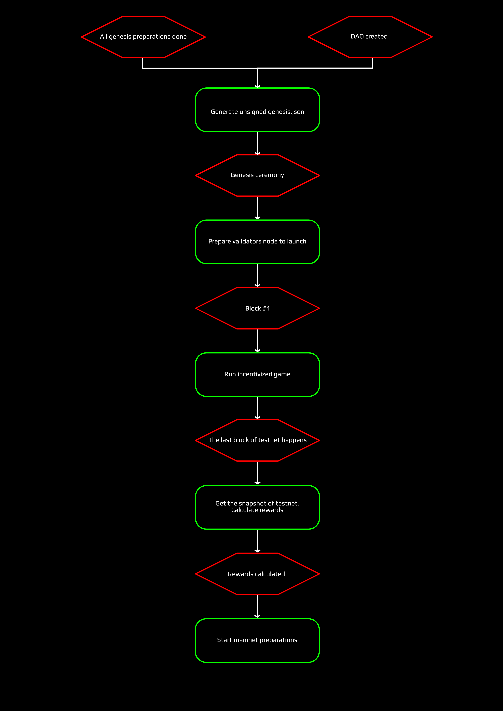

An awesome tool-kit for launching Cosmos-SDK and Tendermint-based projects
by serejandmyself on 2020-04-21
TL;DR
As a team, we have over 5 years of experience launching blockchain-related products and projects. One of our core principles is decentralization and transparency, hence we work in a 100% open-source manner. This not only relates to code, but to our documentation, organisation process and so on.
Another core principle that we follow is trying to deliver tools for others as we progress. To counter both of these principles we would like to share a launch-kit that was prepared by our team for the launch of cyber (which is still ongoing).
This tool kit includes various tools, build by ourselves or forked and modified from other awesome projects. Primarily these are tools for distribution params, conversion and exporting tools and tools for compiling the Genesis of your project. This post will overview the launch-kit repository and our suggested workflow for teams starting their own projects on Cosmos.
The toolkit, Cyber and Cosmos
To save a long story, here is the awesome tool-kit repository.
Cyber is a decentralized google for provable and relevant answers. Its mission is to create an open semantics field of the internet, make knowledge accessible to anyone and to decentralize the services of the internet with the use of blockchain technology. You can use the slick cyber.page to interact with cyber.
To understand the toolkit fully, you should be aware that cyber made a real big accent on its distribution params. Our goal is to achieve the best possible distribution by using a distribution process, that consists of several games and a gift to specific communities. Our other big accent is on governance and community governed DAOs.
Cosmos is the internet of blockchains. According to its intro, it is a decentralized network of independent parallel blockchains, each powered by consensus algorithms like Tendermint consensus. Tendermint and Cosmos-SDK are probably the most advanced tools that let you build your own blockchain. In fact, most of the work below was inspired by The launch of Cosmos.
Who can use this toolkit?
The toolkit is primarily addressed at 2 different groups:
- Developers that want to launch their chain using Tendermint and/or Cosmos-SDK
- Cybers heroes and masters, wanting to make sure that cyber launched as it says it did
Of course, anyone is welcome to use it for any other purposes.
What’s inside the toolkit
Before we move on to the workflow and why you should use it, let’s examine what this toolkit contains:
Cosmos gift tool: Takes Cosmos addresses on certain block height and pulls their balanceCyber address converter: Converts ETH and Cosmos addresses to Cyber addresses. For Cosmos addresses, we change the prefix and postfix, which is fairly simple. For ETH, we cannot calculate the address directly. We need to pull the pub keys. Pub keys are pulled only if there are any outgoing tx’s for the specified address (and it’s not a contract). We then proceed to use the pub keys and converts them to Cyber addressesCyberlink exporter: For migrating links between Cyber chains. Exports links from graph QL according to the subjects. In other words, it goes to the graph QL and collects unique links of an account.Distribution: Contains files that make up the genesis. Shows what goes whereETH gift tool: ETH gift toolGame reward calculations: Still in the making. Calculates rewards for Cybers incentivized gameGen_tx: Genesis transactions. A process that describes the genesis ceremony and for it, we use the:Genesis generator tool: It takes all the files, params, distribution, gifts, and gives out a .json file. This .json is used for the genesis ceremony at the Genesis blockLifetime rewards tool: Calculates rewards for validators per their precommits on a certain chain-idUrbit gift tool: Not consistent for the time being. A gift tool for Urbit addressesDiagram of flow: A diagram to help you understand our flow better and to plan your own flowCrisis protocol: What to do in case of a failure
{kind=link}
Why should you use this toolkit and how it can save you time?
This is an excellent question. Well, we do have the answers, but I will assume that if you are coming to use it, you should already have some answers for yourself. If you are still unsure, let me try to explain why you should use this toolkit and how it can save you time!
PoS-based chains have initial distribution trouble. If PoW chains kinda solve the issue: you burn some electricity (do an action) and receive a reward for it by securing the chain and helping it to communicate, then in PoS, the initial distribution is kinda left unravelled.
We believe that the initial distribution of the project is uber important. Even if this distribution changes later, the initial stakeholders should be strong hands that are committed to the distribution. Obviously, it should be as fair as possible and include as many actors as possible.
We took the biggest developers project out there (Ethereum), the most promising and our native project (Cosmos) and (probably) the most technologically advanced project (in the world) -Urbit. We gifted 10% of our supply to these projects to increase traction and to improve distribution. Hence, our gifting and converting tools.
But this is just one step. Inspired by the Game of Stakes we created our own set of distribution games to help us to achieve the best process tat targets 3 different user groups: believers, validators (infrastructure) and speculators. The kit contains a lot of numbers in the distribution section, check them out to get a better understanding of the distribution.
There are other steps to this, and I suggest you check out our docs to understand the economics behind cyber. Which isn’t simple and is designed like that for several reasons:
- Achieving the best possible initial distribution
- Protecting the economy at its infancy from dumps
- Utilizing the utility of the protocol and providing agents with non-zero at stake incentives
Distribution is important, but another important part that will save you time and money in the long term is using these tools to provide transparency. A good description of the launch process can help to make it clear, transparent and for users that will govern the protocol, make sure that you did not cheat. The launch protocol contains the so-called point of truth, which fix the most important steps on the flow diagram with an IPFS hash that can be checked by anyone wishing to do so.
The tools provided by the kit can be recreated, forked, customized to your own needs and be used for planning an even more amazing distribution.
The kit should be used at 3 different stages of your planning:
1) Before the launch: Look at the flow diagram, some clusters let you understand what to do and how. They warn you of possible danger zones and let you know what you should do at this stage. For example, create a Genesis file with the distribution params, pick the communities you want to target, let the community discuss these params, decide on them and finally create a genesis file for the launch ceremony
2) During the launch: We can use the kit to launch any of our applications, count the hashes of files tor your own points of truth, plan proposals, DAOs, etc
3) After the launch: The kit can provide a tool to calculate rewards if your launch included similar incentivized processes and of course serve as a basis to build your own kit
The DAOs and the governance
We believe that technology does not require CEOs, CMOs and other fairy tale creatures. A good tech can live on its own. Blockchain helps to govern that tech and for shareholders to be represented. In other words, allows the tech to become independent of unnecessary bureaucratic hassle and other bingo-bullshit.
In the flow diagram, we describe the creation of the community DAO, the launch of the initialization of roles, contracts, etc. For this post, I will not go into detail about how to do this, as we have already created a huge workflow for this specific purpose.
You can find everything that you need in this intro post, cyber~Foundationrepostory and our awesome guide of how to create one DAO with another DAO and supply it with the necessary tools (the guide will walk you through each tool and how to set it up).
Flow for devs
Now that we finally understand what the kit includes, why we should use it and what benefits it can give, here is a short workflow we would like to suggest for devs and hackers (of course, you are welcome to change anything, this is just a suggestion):
1) Develop your distribution: Plan the Genesis file. Decide which communities you will attract and why. Think about the economics of your project. What percentage you want to give to what actors and for what reasons. As an example, you can view our distribution directory
2) Fill in the .json files, cyber_distribution.json and manual_distribution.json
3) Decide on the params of the network with your community. Set the values up inside the network_genesis.json. You can use our params folder
4) Select the tools that you want and don’t forget to format them per your own requirements, they should match your economy! If you have used any gifting tools, you will need to create a .csv file and use our converter tool. If you’re doing the distribution yourself, you will need our genesis generator tool
5) When everything is prepared, move it to genesis-generator-tool/data and use the same tool as above
6) Run a Genesis ceremony
7) Launch your DAO and governance

Links that may help you
- Our Homestead doc: explains what goes where and who is who
- Our forum for any questions
- Game of Links rules
You are welcome to ask questions in our TG chat or open an issue in this repository regarding anything in this post.